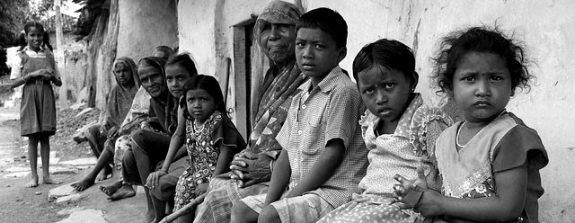
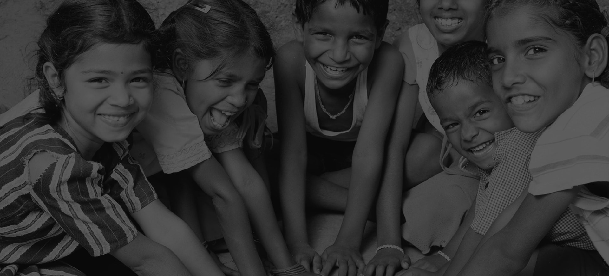

As many of you are aware, the Events & Program Team, are known to create interesting, interactive and conceptually unique activities for our donors and patrons. Over the years, many of you have participated in these initiatives and lent your support. Our aim through our Art & Events fundraisers has been to give back to our patrons and supporters, by not only having the satisfaction and goodwill associated with helping someone less privileged through their generosity, but also to take home a tangible memory with them - to remind them of the smiles they have painted on the faces of KHUSHII beneficiaries, and the brighter futures they have helped build.

One of our flagship projects, KHUSHI works towards strengthening the functionality and quality of service delivery of government’s Integrated Child Development Services (ICDS) Program to improve the health and well-being of children below 6 years of age with a focus from marginalised communities in districts of Rajasthan. This project seeks to address the issue of insufficient school preparedness in children by developing the existing preschool support mechanism to strengthen capacity building and resource support to workers. In line with the specific objectives of the project- strengthening pre-school education and health status of children in age group 0 to 6 years, it focuses on enhancing the capacity of supervisors, improvement in infrastructure and monitoring attendance, retention and development of children.

Pavement Project has been working with traumatised children and young people. Street children are some of the most at-risk people on the planet, vulnerable to disease, exploitation and abuse. That's where Pavement Project began, and where the heart of the program is still - working with children and young people on the streets, formerly on the streets or in institutions.

Make a Change project is to elevate quality of life; to strive for the respect of traditions, languages, and cultural identity; to strengthen individual and collective rights; and to provide material, economic, and technical assistance. Children are the change-makers of tomorrow and it is our duty to encourage, educate and prepare them for a better future. We believe that childhood is the most critical phase of ones life; it is the best time to learn, imbibe great values and form ones personality.